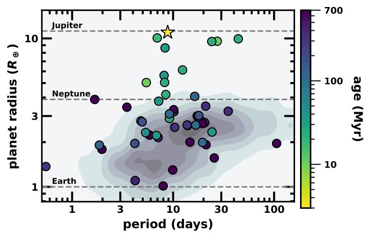

TIDYE is a survey for transiting planets around the youngest stars TESS can see, those younger than about 50 million years. Madyson Barber runs it, as part of the NASA Exoplanets Research Program project "Demographics of Young Planets with TESS." Rather than following up one interesting planet at a time, the goal is a census: how common are planets of each size and orbit at these ages, and how does that compare to the planets around mature stars?
That requires knowing what we could have missed. Stars this young vary in brightness far more than older stars, and many still have disks. So TIDYE pairs the planet search with careful tests of how well we can recover transits under that variability (like the animation above), and with membership lists of young associations so every star has an age.
The headline result so far is TIDYE-1b, also known as IRAS 04125+2902b: a transiting planet around a 3 million year old star in the Taurus star-forming region. It is the youngest transiting planet known, and its star still has an outer disk that is tilted relative to the planet's orbit. We published it in Nature in 2024. Read the full story on its own page, or get the PDF of the paper. Follow-up with SOYSAUCE found that the planet's orbit is likely aligned with its star's spin.

The TIDYE papers also include a second giant planet in the 17 Myr HIP 67522 system, an inner super-Earth in the TOI-2076 system, and a Jupiter-sized planet around a 34 Myr Sun-like star in the Vela association (see the list below).
TIDYE-1b also fits a pattern we see across our surveys: young planets are bigger than their older counterparts.